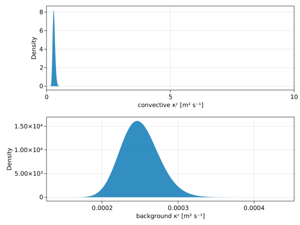
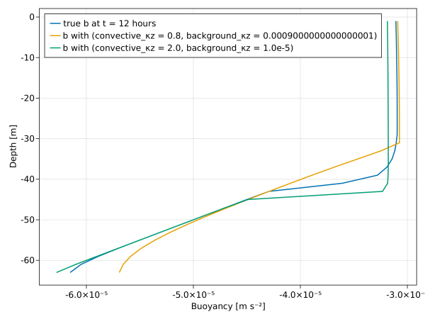

Intro to InverseProblem
This example illustrates the construction of an "ensemble simulation" that can evaluate an ensemble of column models given an ensemble of free parameter sets. The example then builds an InverseProblem from observations, an ensemble simulation, and a set of free parameters, and illustrates its basic usage.
Install dependencies
First let's make sure we have all required packages installed.
using Pkg
pkg"add OceanTurbulenceParameterEstimation, Oceananigans, Distributions, CairoMakie"First we load few things
using OceanTurbulenceParameterEstimation
using Oceananigans
using Oceananigans.Architectures: arch_array
using Oceananigans.Units
using Oceananigans.Models.HydrostaticFreeSurfaceModels: ColumnEnsembleSize
using Oceananigans.TurbulenceClosures: ConvectiveAdjustmentVerticalDiffusivity
using CairoMakie
using Distributions
using JLD2We reuse some utilities from a previous example to build observations:
examples_path = joinpath(pathof(OceanTurbulenceParameterEstimation), "..", "..", "examples")
include(joinpath(examples_path, "intro_to_observations.jl"))
data_path = generate_synthetic_observations()
observations = SyntheticObservations(data_path, field_names=:b, transformation=ZScore())SyntheticObservations with fields (:b,)
├── times: [0.0, 14400.0, 28800.0, 43200.0]
├── grid: 1×1×32 RectilinearGrid{Float64, Oceananigans.Grids.Flat, Oceananigans.Grids.Flat, Oceananigans.Grids.Bounded} on Oceananigans.Architectures.CPU with 0×0×1 halo
├── path: "convective_adjustment.jld2"
├── metadata: (:parameters, :grid, :coriolis, :closure)
└── transformation: Dict{Symbol, OceanTurbulenceParameterEstimation.Transformations.Transformation{TimeIndices{UnitRange{Int64}}, Nothing, ZScore{Float64}}} with 1 entryBuilding an "ensemble simulation"
Our next task is to construct a parameterized Oceananigans.Simulation that generates the "foward map" for an ensemble of free parameter sets. To generate an ensemble of column model model outputs efficiently, we construct one 3D Oceananigans.Simulation consisting of Nx by Ny independent column models.
The calibration problem then uses the ensemble simulation to find optimal parameters by minimizing the discrepency between the observations and the forward map.
"""
extract_perfect_parameters(observations, Nensemble)
Extract parameters from a batch of "perfect" observations.
"""
function extract_perfect_parameters(observations, Nensemble)
Nbatch = length(observations)
Qᵘ, Qᵇ, N², f = [zeros(Nensemble, Nbatch) for i = 1:4]
Nz = first(observations).grid.Nz
Hz = first(observations).grid.Hz
Lz = first(observations).grid.Lz
Δt = first(observations).metadata.parameters.Δt
for (j, obs) in enumerate(observations)
Qᵘ[:, j] .= obs.metadata.parameters.Qᵘ
Qᵇ[:, j] .= obs.metadata.parameters.Qᵇ
N²[:, j] .= obs.metadata.parameters.N²
f[:, j] .= obs.metadata.coriolis.f
end
file = jldopen(first(observations).path)
closure = file["serialized/closure"]
close(file)
return Qᵘ, Qᵇ, N², f, Δt, Lz, Nz, Hz, closure
end
"""
build_ensemble_simulation(observations, arch=CPU(); Nensemble=1)
Returns an `Oceananigans.Simulation` representing an `Nensemble × 1`
ensemble of column models designed to reproduce `observations`.
"""
function build_ensemble_simulation(observations, arch=CPU(); Nensemble=1)
observations isa Vector || (observations = [observations]) # Singleton batch
Nbatch = length(observations)
Qᵘ, Qᵇ, N², f, Δt, Lz, Nz, Hz, closure = extract_perfect_parameters(observations, Nensemble)
column_ensemble_size = ColumnEnsembleSize(Nz=Nz, ensemble=(Nensemble, Nbatch), Hz=Hz)
ensemble_grid = RectilinearGrid(arch, size = column_ensemble_size, topology = (Flat, Flat, Bounded), z = (-Lz, 0))
coriolis_ensemble = arch_array(arch, [FPlane(f=f[i, j]) for i = 1:Nensemble, j=1:Nbatch])
closure_ensemble = arch_array(arch, [deepcopy(closure) for i = 1:Nensemble, j=1:Nbatch])
Qᵘ, Qᵇ, N² = Tuple(arch_array(arch, p) for p in (Qᵘ, Qᵇ, N²))
u_bcs = FieldBoundaryConditions(top = FluxBoundaryCondition(Qᵘ))
b_bcs = FieldBoundaryConditions(top = FluxBoundaryCondition(Qᵇ), bottom = GradientBoundaryCondition(N²))
tracers = first(observations).metadata.parameters.tracers
ensemble_model = HydrostaticFreeSurfaceModel(grid = ensemble_grid,
tracers = tracers,
buoyancy = BuoyancyTracer(),
boundary_conditions = (; u=u_bcs, b=b_bcs),
coriolis = coriolis_ensemble,
closure = closure_ensemble)
ensemble_simulation = Simulation(ensemble_model; Δt=Δt, stop_time=first(observations).times[end])
return ensemble_simulation, closure
endMain.build_ensemble_simulationThe following illustrations uses a simple ensemble simulation with two ensemble members:
ensemble_simulation, closure★ = build_ensemble_simulation(observations; Nensemble=3)(Simulation{typename(Oceananigans.Models.HydrostaticFreeSurfaceModels.HydrostaticFreeSurfaceModel){typename(Oceananigans.Architectures.CPU), Float64}}
├── Model clock: time = 0 seconds, iteration = 0
├── Next time step: 10 seconds
├── Elapsed wall time: 0 seconds
├── Stop time: 12 hours
├── Stop iteration : Inf
├── Wall time limit: Inf
├── Callbacks: typename(OrderedCollections.OrderedDict) with 4 entries:
│ ├── stop_time_exceeded => typename(Oceananigans.Simulations.Callback)
│ ├── stop_iteration_exceeded => typename(Oceananigans.Simulations.Callback)
│ ├── wall_time_limit_exceeded => typename(Oceananigans.Simulations.Callback)
│ └── nan_checker => typename(Oceananigans.Simulations.Callback)
├── Output writers: typename(OrderedCollections.OrderedDict) with no entries
└── Diagnostics: typename(OrderedCollections.OrderedDict) with no entries, ConvectiveAdjustmentVerticalDiffusivity: (background_κz=0.0001, convective_κz=1.0, background_νz=1.0e-5, convective_νz=0.9))Free parameters
We construct some prior distributions for our free parameters. We found that it often helps to constrain the prior distributions so that neither very high nor very low values for diffusivities can be drawn out of the distribution.
priors = (convective_κz = lognormal(mean=0.3, std=0.05),
background_κz = lognormal(mean=2.5e-4, std=0.25e-4))
free_parameters = FreeParameters(priors)FreeParameters with 2 parameters
├── names: (:convective_κz, :background_κz)
└── priors: Dict{Symbol, Any}
├── convective_κz => LogNormal{Float64}(μ=-1.2176722914199933, σ=0.16552635496534787)
└── background_κz => LogNormal{Float64}(μ=-8.299024805528612, σ=0.0997513451195927)We also take the opportunity to collect a named tuple of the optimal parameters
θ★ = (convective_κz = closure★.convective_κz,
background_κz = closure★.background_κz)(convective_κz = 1.0, background_κz = 0.0001)Visualizing the priors
We visualize our prior distributions by plotting a huge number of samples:
using OceanTurbulenceParameterEstimation.Parameters: unconstrained_prior, transform_to_constrained
Nsamples = 50000000
sample(prior) = [transform_to_constrained(prior, X) for X in rand(unconstrained_prior(prior), Nsamples)]
convective_κz_samples = sample(priors.convective_κz)
background_κz_samples = sample(priors.background_κz)
fig = Figure()
ax_top = Axis(fig[1, 1], xlabel = "convective κᶻ [m² s⁻¹]", ylabel = "Density")
density!(ax_top, convective_κz_samples)
xlims!(ax_top, 0, 10)
ax_bottom = Axis(fig[2, 1], xlabel = "background κᶻ [m² s⁻¹]", ylabel = "Density")
density!(ax_bottom, background_κz_samples)
save("prior_visualization.svg", fig)
The InverseProblem
We can construct the inverse problem $y = G(θ) + η$. Here, $y$ are the observations and $G$ is the ensemble_model.
calibration = InverseProblem(observations, ensemble_simulation, free_parameters)InverseProblem{ConcatenatedOutputMap}
├── observations: SyntheticObservations of (:b,) on 1×1×32 RectilinearGrid{Float64, Oceananigans.Grids.Flat, Oceananigans.Grids.Flat, Oceananigans.Grids.Bounded} on Oceananigans.Architectures.CPU with 0×0×1 halo
├── simulation: Simulation on 3×1×32 RectilinearGrid{Float64, Oceananigans.Grids.Flat, Oceananigans.Grids.Flat, Oceananigans.Grids.Bounded} on Oceananigans.Architectures.CPU with 0×0×1 halo with Δt=10.0
├── free_parameters: (:convective_κz, :background_κz)
└── output map: ConcatenatedOutputMapUsing InverseProblem to compute forward_map
As a sanity check we apply the forward_map on the calibration after we initialize all ensemble members with the true parameter values. We then confirm that the output of the forward_map matches the observations to machine precision.
θ¹ = (convective_κz = 0.8 * θ★.convective_κz,
background_κz = 9.0 * θ★.background_κz)
θ² = (convective_κz = 2.0 * θ★.convective_κz,
background_κz = 0.1 * θ★.background_κz)
θ_ensemble = [θ★, θ¹, θ²]
G = forward_map(calibration, θ_ensemble)
y = observation_map(calibration)96×1 Matrix{Float64}:
-1.8135192983242983
-1.714309667051873
-1.5855951190148025
-1.451933591812802
-1.3176995756021481
-1.183415117582495
-1.0491270751760504
-0.914838819451915
-0.780550552809007
-0.6462622856757615
⋮
0.29622965498029163
0.2956837695429412
0.2950288661085783
0.29426767575349555
0.2934032906356803
0.2924387997737332
0.2913769972442317
0.2902201595104058
0.2889698871126094The forward_map output G is a two-dimensional matrix whose first dimension is the size of the state space and whose second dimension is the ensemble_size. Here, we ensure that first ensemble member of the mapped output, which was run with the "true" parameters, is identical to the mapped observations:
G[:, 1] ≈ ytrueVisualizing forward model output
Next we visualize the discrepency between solutions generated by true and non-optimal parameter sets θ¹ and θ². Time-series data from the ensemble run is collected by calibration.time_series_collector:
time_series_collector = calibration.time_series_collector
times = time_series_collector.times
# Extract last save point and plot each solution component
Nt = length(times)
b = time_series_collector.field_time_serieses.b[Nt]
t = times[Nt]
z = znodes(b)
# The ensemble varies along the first, or `x`-dimension:
b★ = interior(b)[1, 1, :]
b¹ = interior(b)[2, 1, :]
b² = interior(b)[3, 1, :]
fig = Figure()
ax = Axis(fig[1, 1],
xlabel = "Buoyancy [m s⁻²]",
ylabel = "Depth [m]")
b★_label = "true b at t = " * prettytime(t)
b¹_label = "b with $θ¹"
b²_label = "b with $θ²"
lines!(ax, b★, z; label=b★_label, linewidth=2)
lines!(ax, b¹, z; label=b¹_label, linewidth=2)
lines!(ax, b², z; label=b²_label, linewidth=2)
axislegend(ax, position=:lt)
This page was generated using Literate.jl.